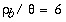
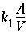

In this example, the precipitation of phases as a result of incongruent dissolution of K-feldspar (microcline) is investigated. Only a limited set of phases--K-feldspar, gibbsite, kaolinite, and K-mica (muscovite)--is considered in this example. The reaction path for this set of phases was originally addressed by Helgeson and others (1969). In this example, the thermodynamic data for the phases (table 21, PHASES keyword) are derived from Robie and others (1978) and are the same as test problem 5 in the PHREEQE manual (Parkhurst and others, 1980).
PHREEQC can be used to solve this problem in three ways: the individual intersections of the reaction path and the phase boundaries on a phase diagram can be calculated (example 6A), the reaction path can be calculated incrementally (6B), or the reaction path can be calculated as a kinetic process (6C). In the first approach, no knowledge of the amounts of reaction is needed, but a number of simulations are necessary to find the appropriate phase-boundary intersections. In the second approach, only one simulation is sufficient, but the appropriate amounts of reaction must be known beforehand. In the third approach, a kinetic rate expression is used to calculate the reaction path, using a step-size adjusting algorithm which takes care of phase boundary transitions by automatically decreasing the time interval when necessary. Only the total time to arrive at the point of K-feldspar equilibrium is required. All three approaches are demonstrated in this example. PHREEQC implicitly contains all the logic of a complete reaction-path program (for example Helgeson and others, 1970, Wolery, 1979, Wolery and others, 1990). Moreover, the capability to calculate directly the phase boundary intersections provides an efficient way to outline reaction paths on phase diagrams, and the option to add the reaction incrementally and automatically find the stable phase assemblage allows points on the reaction path between phase boundaries to be calculated easily and rapidly. The kinetic approach and the Basic interpreter that is embedded in PHREEQC can be used to save and print the arrival time and the aqueous composition at each phase transition.
Conceptually, the example considers the reactions that would occur if K-feldspar were placed in a beaker and allowed to react slowly. As K-feldspar dissolves, other phases may begin to precipitate. In this example, it is assumed that only gibbsite, kaolinite, or K-mica can form, and that these phases will precipitate reversibly if they reach saturation. Phases precipitated at the beginning of the reaction may redissolve as the reaction proceeds.
Table 21. --Input data set for example 6
TITLE Example 6A.--React to phase boundaries.
SOLUTION 1 PURE WATER
pH 7.0 charge
temp 25.0
PHASES
Gibbsite
Al(OH)3 + 3 H+ = Al+3 + 3 H2O
log_k 8.049
delta_h -22.792 kcal
Kaolinite
Al2Si2O5(OH)4 + 6 H+ = H2O + 2 H4SiO4 + 2 Al+3
log_k 5.708
delta_h -35.306 kcal
K-mica
KAl3Si3O10(OH)2 + 10 H+ = 3 Al+3 + 3 H4SiO4 + K+
log_k 12.970
delta_h -59.377 kcal
K-feldspar
KAlSi3O8 + 4 H2O + 4 H+ = Al+3 + 3 H4SiO4 + K+
log_k 0.875
delta_h -12.467 kcal
SELECTED_OUTPUT
-file ex6A-B.sel
-activities K+ H+ H4SiO4
-si Gibbsite Kaolinite K-mica K-feldspar
-equilibrium Gibbsite Kaolinite K-mica K-feldspar
END
TITLE Example 6A1.--Find amount of K-feldspar dissolved to
reach gibbsite saturation.
USE solution 1
EQUILIBRIUM_PHASES 1
Gibbsite 0.0 KAlSi3O8 10.0
Kaolinite 0.0 0.0
K-mica 0.0 0.0
K-feldspar 0.0 0.0
END
TITLE Example 6A2.--Find amount of K-feldspar dissolved to
reach kaolinite saturation.
USE solution 1
EQUILIBRIUM_PHASES 1
Gibbsite 0.0 0.0
Kaolinite 0.0 KAlSi3O8 10.0
K-mica 0.0 0.0
K-feldspar 0.0 0.0
END
TITLE Example 6A3.--Find amount of K-feldspar dissolved to
reach K-mica saturation.
USE solution 1
EQUILIBRIUM_PHASES 1
Gibbsite 0.0 0.0
Kaolinite 0.0 0.0
K-mica 0.0 KAlSi3O8 10.0
K-feldspar 0.0 0.0
END
TITLE Example 6A4.--Find amount of K-feldspar dissolved to
reach K-feldspar saturation.
USE solution 1
EQUILIBRIUM_PHASES 1
Gibbsite 0.0 0.0
Kaolinite 0.0 0.0
K-mica 0.0 0.0
K-feldspar 0.0 KAlSi3O8 10.0
END
TITLE Example 6A5.--Find point with kaolinite present,
but no gibbsite.
USE solution 1
EQUILIBRIUM_PHASES 1
Gibbsite 0.0 KAlSi3O8 10.0
Kaolinite 0.0 1.0
END
TITLE Example 6A6.--Find point with K-mica present,
but no kaolinite
USE solution 1
EQUILIBRIUM_PHASES 1
Kaolinite 0.0 KAlSi3O8 10.0
K-mica 0.0 1.0
END
TITLE Example 6B.--Path between phase boundaries.
USE solution 1
EQUILIBRIUM_PHASES 1
Kaolinite 0.0 0.0
Gibbsite 0.0 0.0
K-mica 0.0 0.0
K-feldspar 0.0 0.0
REACTION 1
K-feldspar 1.0
0.04 0.08 0.16 0.32 0.64 1.0 2.0 4.0
8.0 16.0 32.0 64.0 100 200 umol
END
TITLE Example 6C.--kinetic calculation
SOLUTION 1
-units mol/kgw
Al 1.e-13
K 1.e-13
Si 3.e-13
EQUILIBRIUM_PHASES 1
Gibbsite 0.0 0.0
Kaolinite 0.0 0.0
K-mica 0.0 0.0
KINETICS 1
K-feldspar
# k0 * A/V = 1e-16 mol/cm2/s * (10% fsp, 0.1mm cubes) 136/cm = 136.e-13 mol/dm3/s
-parms 1.36e-11
-m0 2.16
-m 1.94
-step_divide 1e-6
-steps 1e2 1e3 1e4 1e5 1e6 1e7 1e8
INCREMENTAL_REACTIONS true
RATES
K-feldspar
-start
10 REM store the initial amount of K-feldspar
20 IF EXISTS(1) = 0 THEN PUT(M, 1)
30 REM calculate moles of reaction
40 SR_kfld = SR("K-feldspar")
50 moles = PARM(1) * (M/M0)^0.67 * (1 - SR_kfld) * TIME
60 REM The following is for printout of phase transitions
80 REM Start Gibbsite
90 if ABS(SI("Gibbsite")) > 1e-3 THEN GOTO 150
100 i = 2
110 GOSUB 1500
150 REM Start Gibbsite -> Kaolinite
160 if ABS(SI("Kaolinite")) > 1e-3 THEN GOTO 200
170 i = 3
180 GOSUB 1500
200 REM End Gibbsite -> Kaolinite
210 if ABS(SI("Kaolinite")) > 1e-3 OR EQUI("Gibbsite") > 0 THEN GOTO 250
220 i = 4
230 GOSUB 1500
250 REM Start Kaolinite -> K-mica
260 if ABS(SI("K-mica")) > 1e-3 THEN GOTO 300
270 i = 5
280 GOSUB 1500
300 REM End Kaolinite -> K-mica
310 if ABS(SI("K-mica")) > 1e-3 OR EQUI("Kaolinite") > 0 THEN GOTO 350
320 i = 6
330 GOSUB 1500
350 REM Start K-mica -> K-feldspar
360 if ABS(SI("K-feldspar")) > 1e-3 THEN GOTO 1000
370 i = 7
380 GOSUB 1500
1000 SAVE moles
1010 END
1500 REM subroutine to store data
1510 if GET(i) >= M THEN RETURN
1520 PUT(M, i)
1530 PUT(TOTAL_TIME, i, 1)
1540 PUT(LA("K+")-LA("H+"), i, 2)
1550 PUT(LA("H4SiO4"), i, 3)
1560 RETURN
-end
USER_PRINT
10 DATA "A: Gibbsite ", "B: Gibbsite -> Kaolinite ", \
"C: Gibbsite -> Kaolinite ", "D: Kaolinite -> K-mica ", \
"E: Kaolinite -> K-mica ", "F: K-mica -> K-feldspar"
20 PRINT " Transition Time K-feldspar LA(K/H) LA(H4SiO4)"
30 PRINT " reacted"
40 PRINT " (moles)"
50 FOR i = 2 TO 7
60 READ s$
70 IF EXISTS(i) THEN PRINT s$, GET(i,1), GET(1) - GET(i), GET(i,2), GET(i,3)
80 NEXT i
SELECTED_OUTPUT
-file ex6C.sel
-reset false
USER_PUNCH
-head pH+log[K] log[H4SiO4]
10 PUNCH LA("K+")-LA("H+") LA("H4SiO4")
END
The input data set (table 21) first defines pure water with SOLUTION input and the thermodynamic data for the phases with PHASES input. Some of the minerals are defined in the database file ( phreeqc.dat ), but inclusion in the input data set replaces any previous definitions for the duration of the run (the database file is not altered). SELECTED_OUTPUT is used to produce a file of all the data that appear in table 22 and that were used to construct figure 6. SELECTED_OUTPUT specifies that the log of the activities of potassium ion, hydrogen ion, and silicic acid; the saturation indices for gibbsite, kaolinite, K-mica, and K-feldspar; and the total amounts in the phase assemblage and mole transfers for gibbsite, kaolinite, K-mica, and K-feldspar will be written to the file ex6A-B.sel after each calculation. The definitions for SELECTED_OUTPUT remain in effect for all simulations in the run, until a new SELECTED_OUTPUT data block is read, or until writing to the file is suspended with the identifier -selected_output in the PRINT data block.
Simulation 6A1 allows K-feldspar to react until equilibrium with gibbsite is reached. This is set up in EQUILIBRIUM_PHASES input by specifying equilibrium for gibbsite (saturation index equals 0.0) and an alternative reaction to reach equilibrium, KAlSi3O8 (the formula for K-feldspar). A large amount of K-feldspar (10.0 mol) is present to assure equilibrium with gibbsite can be obtained. Kaolinite, K-mica, and K-feldspar are allowed to precipitate if they become saturated, but they can not dissolve because they were given zero initial moles in the phase assemblage. The amount of reaction that is calculated in this simulation is the dissolution of precisely enough K-feldspar to reach equilibrium with gibbsite, possibly including precipitation of one or more of the other minerals. No gibbsite will dissolve or precipitate; the alternative reactant (KAlSi3O8) will dissolve or precipitate in its place. Simulations 6A2-6A4 perform the same calculations for kaolinite, K-mica, and K-feldspar. At other temperatures or using other minerals, it may be that a target phase is undersaturated regardless of the amount of the alternative reaction that is added because the phase is unstable relative to other phases. In this case, the numerical method will find the amount of the alternative reaction that produces the maximum saturation index.
Figure 6. --Phase diagram for the dissolution of K-feldspar (microcline) in pure water at 25 o C showing stable phase-boundary intersections (example 6A) and reaction paths across stability fields (example 6B). Diagram was constructed using thermodynamic data for gibbsite, kaolinite, K-mica (muscovite), and microcline from Robie and others (1978).
Selected results for simulations 6A1-6A4 are presented in table 22 and are plotted on figure 6 as points A, B, D, and F. The stability fields for the phases, which are based on the thermodynamic data, are outlined on the figure but are not calculated by the modeling in these simulations. At point B gibbsite starts to be transformed into kaolinite, a reaction which consumes Si. The reaction path must follow the gibbsite-kaolinite phase boundary to some intermediate point C until all gibbsite is converted, and then the path crosses the kaolinite field to point D. Similarly, there is a point E on the kaolinite-K-mica phase boundary, where the reaction path starts crossing the K-mica field to point F. Simulations 6A5 and 6A6 (table 21) solve for these two points. In simulation 6A5, point C is calculated by allowing K-feldspar to dissolve to a point where kaolinite is at saturation and is present in the phase assemblage, while gibbsite is at saturation, but not present in the phase assemblage. Likewise, simulation 6A6 solves for the point where K-mica is at saturation and present in the phase assemblage, while kaolinite is at saturation, but is not present in the phase assemblage. Assigning an initial amount of 1 mol to kaolinite in 6A5 and K-mica in 6A6 is arbitrary; the amount must only be sufficient to reach equilibrium with the mineral.
A simpler approach to determining the reaction path is to react K-feldspar incrementally, allowing the stable phase assemblage among gibbsite, kaolinite, K-mica, and K-feldspar to form at each point along the path. The only difficulty in this approach is to know the appropriate amounts of reaction to add. From points A and F in table 22, K-feldspar dissolution ranges from 0.03 to 190.9 mmol. In part 6B (table 21) a logarithmic range of reaction increments is used to define the path (solid line) across the phase diagram from its beginning at gibbsite equilibrium (point A) to equilibrium with K-feldspar (point F). However, the exact locations of points A through F will not be determined with the arbitrary set of reaction increments that are used in part B. The reaction path calculated by part 6B is plotted on the phase diagram in figure 6 with points A through F from part 6A included in the set of points.
Finally, in the kinetic approach, kinetic dissolution of K-feldspar is followed for varying amounts of time, while the phases gibbsite, kaolinite, and K-mica are allowed to precipitate and redissolve as the kinetic reaction proceeds. SOLUTION 1 is defined to have a small amount of dissolved K-feldspar (1e-13 moles). The solution then contains all elements related to phases in EQUILIBRIUM_PHASES, which, although not required for the program to run successfully, eliminates some warning messages.
During the integration of the reaction rates a simple dissolution rate law was assumed based on transition-state theory:
The KINETICS data block is used to enter specific data for the kinetic simulation. The stoichiometry of the kinetic reaction is the chemical formula of K-feldspar; by default the name of the rate is assumed to be a phase defined in PHASES data block and the formula of the phase is used as the stoichiometry of the reaction. It was assumed that the pristine soil contained 10 percent K-feldspar in the form of 0.1 mm cubes, and had  g/cm 3 , so that A/V = 136/cm. The value of  = 1.36e-11 mol/L/s is entered in the KINETICS data block with the identifier -parms (assuming that 1 kgw = 1 liter), and can be recalled as "PARM(1)" in the Basic rate definition in the RATES data block. It was assumed that the soil had already been weathered to some extent, and that only 90 percent of the initial K-feldspar was left [ -m0 2.16 and -m 1.94, where m0 indicates the initial mass (1 kg soil x 0.1 = 100 g / 278.3 g/mol = 0.359 mol/kg x 6 kg/L = 2.16 mol/L), and m the remaining mass (90 percent of 2.16 is 1.94 mol/L)]. The maximum amount of reaction for any time interval is restricted to 1e-6 moles ( -step_divide 1e-6). Time steps (seconds) are defined with the identifier -steps. INCREMENTAL_REACTIONS true causes the total time simulated to be the sum of all of the time steps (1.111111e8 seconds); each new time step starts at end of the previous time step.
The rate for K-feldspar dissolution is defined in the form of Basic statements in the RATES data block. To demonstrate some of the features of the Basic interpreter, the Basic program also identifies and saves information at phase transitions, which is printed at the end of the run via USER_PRINT. The accuracy of locating a phase transition is determined by the user-definable accuracy of the integration. A small tolerance ( -tol), a large -step_divide that is greater than 1 (initial time interval will be divided by this number), or a small -step_divide that is less than 1 (specifies maximum moles of reaction) will force smaller time intervals and more accurate identification of phase transitions. In this example, -step_divide is set to 1e-6, which limits the maximum amount of reaction for any time interval to be less than 1 micromole. Thus, the amount of reaction to reach a phase transition should be identified with an accuracy of one micromole. However, limiting the amount of reaction requires smaller time intervals during the integration and, consequently, more time intervals to complete the integration, which increases the CPU time of the run.
The functions of the different parts of the Basic program are described in table 23. The functions PUT, GET, and EXISTS are used to manipulate data in static, global storage. The subscripts used in the PUT statement identify a datum uniquely. EXISTS can be used to determine if a datum with a given set of subscripts has been stored, and GET is used to retrieve data that have been stored. Once a datum has been stored with PUT, it exists for the remainder of the run, unless it is overwritten with another PUT statement with the same set of subscripts. Data stored with PUT can be retrieved by any Basic program, including those defined in RATES, USER_PRINT, and USER_PUNCH. In this example, data are stored by the RATES Basic program and the USER_PRINT Basic program retrieves the data and prints a summary of the phase transitions. While the RATES program is run many times during the kinetic integration of a time step (integration over many time intervals may be necessary for the required accuracy), the USER_PRINT program is run once at the end of each integration time step.
Table 24 gives the phase transitions encountered by the end of the last time step of example 6C. For each phase transition, the time at which the phase transition occurred, the total amount of K-feldspar that has reacted, and the coordinates of the transition on figure 6 are given. Although the values in table 24 are approximate, the amount of K-feldspar and the coordinates of the transition can be compared to table 22. As expected, the approximate mole transfers to reach the phase transitions are within 1 micromole of the values in table 22.
Table 24. --Phase transitions identified by the RATES Basic program and printed to the output file by the USER_PRINT Basic program in example 6C, which simulates the kinetic dissolution of K-feldspar
----------------------------------User print-----------------------------------
Transition Time K-feldspar LA(K/H) LA(H4SiO4)
reacted
(moles)
A: Gibbsite 1.10000E+03 1.40477E-07 3.57546E-01 -6.37631E+00
B: Gibbsite -> Kaolinite 1.74339E+05 2.20636E-06 2.56086E+00 -5.19500E+00
C: Gibbsite -> Kaolinite 2.39290E+05 3.02835E-06 2.83517E+00 -5.19434E+00
D: Kaolinite -> K-mica 1.58687E+06 2.00699E-05 4.40800E+00 -4.46585E+00
E: Kaolinite -> K-mica 2.59719E+06 3.27914E-05 4.41031E+00 -4.25093E+00
F: K-mica -> K-feldspar 4.78404E+07 1.90721E-04 5.48792E+00 -3.55397E+00
The SELECTED_OUTPUT data block specifies that a new selected-output file will be used for this simulation, ex6C.sel , and all printing to the selected-output file is eliminated ( -reset false). The USER_PUNCH data block causes two columns to be written to each line of the selected-output file, the log of the ratio of the activities of potassium ion to hydrogen ion and the log activity of silicic acid. The data will be written after each time step has been simulated ( -steps, KINETICS data block). The following table shows the results written to ex6C.sel .
Table 25. --Results written to the selected-output file by the USER_PUNCH Basic program in example 6C, which simulates the kinetic dissolution of K-feldspar
["\t " indicates a tab character]
" pH+log[K]"\t "log[H4SiO4"\t -6.00016E+00\t -1.25235E+01\t -1.89754E+00\t -8.42120E+00\t -8.53163E-01\t -7.37985E+00\t 3.57546E-01\t -6.37631E+00\t 2.18230E+00\t -5.38178E+00\t 4.13600E+00\t -4.60047E+00\t 5.26137E+00\t -3.71874E+00\t 5.48836E+00\t -3.55363E+00\t